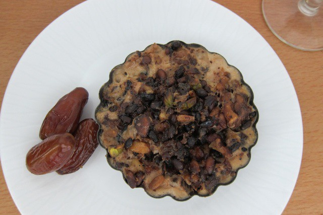

Nut Tart

Sweets were also of great importance in the Roman Empire. Please all your noble friends during your dinner parties with
this nut tart. Don't be like Nero and let this recipe burn in the oven!
"Try patina as dessert: roast pine nuts, peeled and chopped nuts. Add honey, pepper, garum (salt), milk, eggs,
a little undiluted wine, and oil. Pour on to a plate." (Apicus 136)
Ingredients
- 114 oz. crushed nuts: almonds, walnuts, or pistachios
- 5 tbsp honey
- 1/2 cup of sweet wine
- 4 eggs
- 1/2 cup of whole milk or
- 1 tsp salt
- a dash of pepper
- cooking oil
Directions
- Preheat oven to 475°F and chop up nuts.
- Place the chopped nuts and the whole pine nuts in an oven dish and roast until they have turned golden.
- Reduce oven temp to 400°F.
- Meanwhile, mix the honey and the wine in a pan and bring to the boil, then cook until the wine has evaporated.
- Add the nuts and pine nuts to the honey and leave it to cool.
- Beat the eggs with the milk, salt, and pepper.
- Prepare a 18'x9' oven dish with a light coat of oil and pour in the nut mixture.
- Seal the tin with aluminum foil and place it in water bath. Do to not submerge the tart!
- Bake for 25 Minutes until firm, let cool in the fridge.
- Pour warm honey over the tart to serve with dates.
source